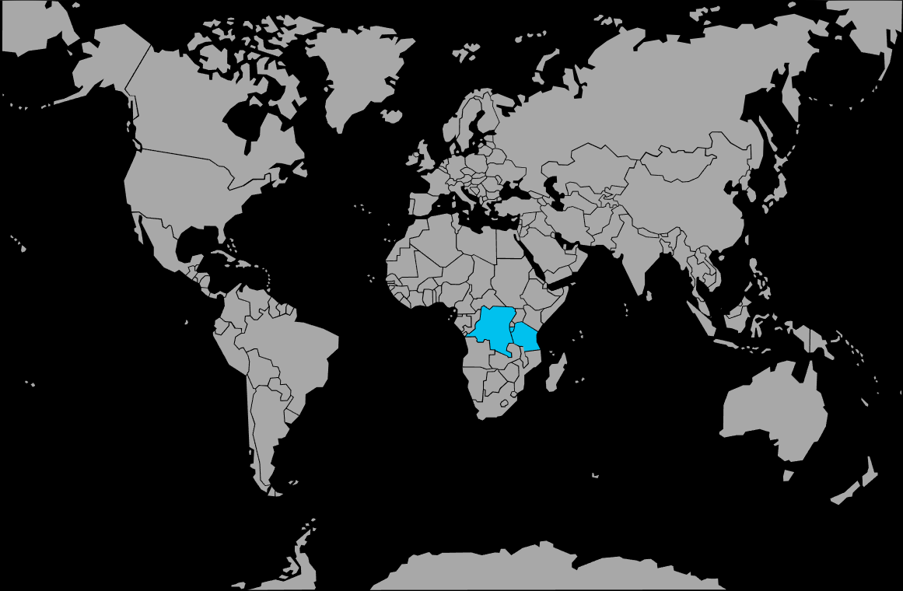

Systématique
- Ordre : Cichliformes
- Famille : Cichlidae
- Sous-famille : Pseudocrenilabrinae
- Genre : Neolamprologus
- Espèce : Neolamprologus multifasciatus
Neolamprologus multifasciatus est l’un des plus petits cichlidés du monde, célèbre pour son comportement de « conchylicole », vivant et se reproduisant dans des coquilles.
Les adultes mesurent en général 3–4 cm pour les mâles et un peu moins pour les femelles, mais ce sont des poissons très territoriaux au sein de leurs colonies de coquilles.
Leur comportement social est fascinant : ils creusent, déplacent du sable, enterrent partiellement des coquilles et organisent une véritable « ville » de coquilles au fond du bac.
L’espèce vit en colonies structurées où chaque individu ou couple défend un petit territoire de coquilles, tout en restant proche des autres membres du groupe.
En aquarium, ils occupent presque exclusivement la zone de fond et interagissent sans cesse avec le substrat et les coquilles, tout en restant relativement paisibles en dehors de leur périmètre immédiat.
Reproduction : ponte et élevage dans les coquilles ; la femelle pond à l’intérieur, le mâle féconde depuis l’entrée et les parents protègent ensuite les jeunes.
Les alevins restent longtemps dans la colonie, utilisant les coquilles voisines comme abri, si bien que plusieurs générations peuvent cohabiter dans le même groupe.
Dimorphisme sexuel : mâles légèrement plus grands, corps plus massif et parfois couleur un peu plus marquée ; femelles plus petites, restant souvent à proximité immédiate de « leur » coquille.
Biotope : zones du lac Tanganyika recouvertes de coquilles vides (notamment Neothauma), sur fond sableux, en eau claire, dure et fortement minéralisée.
Répartition
Origine naturelle :
- Lac Tanganyika (Afrique de l’Est), principalement sur les côtes zambiennes.
- Plateaux sableux recouverts de grandes concentrations de coquilles vides.
L’eau du Tanganyika est extrêmement claire, très minéralisée et alcaline, avec une grande stabilité de température et de paramètres.
En aquarium, un sol sableux clair et une grande quantité de coquilles (au moins 3–4 par poisson) sont indispensables pour observer leur comportement naturel.
Paramètres de maintenance
Température : 24 à 27 °C.
pH : 7,8 à 9,0, l’espèce appréciant une eau nettement alcaline.
GH : 10 à 20 °dGH (ou plus), avec également un KH élevé pour la stabilité.
Courant : léger à modéré, mais surtout une excellente filtration et une eau très propre.
Volume conseillé : à partir de 60–80 L pour un groupe/colonie, avec la quasi‑totalité du sol dédiée aux coquilles.
Régime alimentaire
Régime : omnivore à tendance carnée ; accepte volontiers aliments secs de petite taille, granulés ou paillettes pour cichlidés, ainsi que nourritures congelées ou vivantes (artémias, cyclopes, petits vers).
Une alimentation variée distribuée en petites quantités, adaptée à leur petite bouche, permet de maintenir de bonnes couleurs et une activité soutenue tout en préservant la qualité de l’eau.